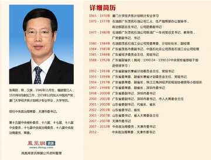
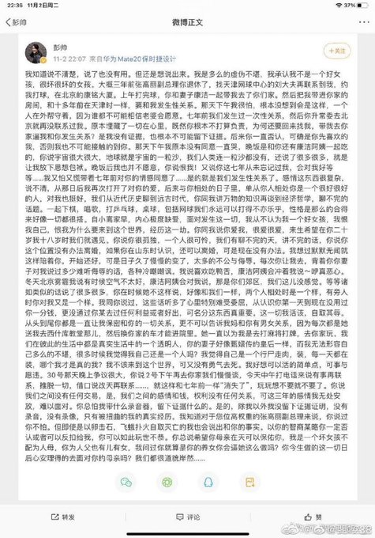

北京时间11月2日晚上十点，著名网球运动员彭帅在微博上发布了她与前常委、副总理张高丽的情人关系经历。
TimedNews.com （@TimednewsC）【强暴时老婆看门 中国前副总理张高丽出事！彭帅自曝情人关系】
 
简要整理版：张高丽老婆康洁帮看着门让张高丽强暴彭帅。后来三人混乱关系，康洁总对彭帅冷嘲热讽摆大房谱，之后张高丽又开始不理睬，彭帅忍无可忍发微博控诉张高丽。 （ 更多： https://t.co/ufq5NyQf1X | pic.twitter.com/Lz7E9i0HN4 ）
— — 5:56 PM · Nov 2, 2021
据《品葱》报道，微博没有第一时间反应过来审核删除，全网疯传，留存了有20分钟之久，基本上互联网和微信群聊都在转。 但越删好奇的人越多，特别多人人在用网球、彭s、大瓜等代号在询问“发生了什么事？”
简要整理版：张高丽老婆康洁帮看着门让张高丽强暴彭帅。后来三人混乱关系相处，康洁总对彭帅冷嘲热讽摆大房谱，之后张高丽开始不理睬，彭帅忍无可忍发微博控诉张高丽。
彭帅在微博发文中表示，自己过去就曾与张高丽发生过性关系，后来张高丽升常委后去了北京，两人就没联系， 想不到3年前已经退休的张高丽，和妻子一起透过关系找她打球，之后竟然带她回家进房，要再次与她发生性关系， “那天下午我很怕，根本没想到会是这样，一个人在外帮守着，因为谁都不可能相信老婆会愿意。”
“原本埋藏了一切在心里，既然你根本不打算负责，为何还要回找我，带我去你家逼我和你发生关系？ ”彭帅表示自己确实没有证据，也不可能留下证据。彭帅自嘲是很坏很坏的女孩，过去就在张高丽已婚的情况下与他发生关系， 张高丽的甜言蜜语打动她，又说因为自己所居高位无法离婚。两人再次发生关系后，她又担心张高丽像过去一样消失，“玩玩想不要就不要了”。
彭帅现年35岁，在网球女子单打世界排名最高在第14位；张高丽则已经75岁，曾是中共主要领导人之一，两人年龄相差40岁。 彭帅，前国家队员，曾被誉为“中国网球公主”，跟李娜、郑洁并称“三朵金花”，还颇有名气，微博粉丝50万。张高丽曾是北京冬奥会工作领导小组组长。
虽然之前总有女明星和国家最高层领导人的各种传闻，但正主自己出来亲自发话还是头一回吧？当然也侧面坐实了各种传闻。
🛡彭帅微博全文：
我知道说不清楚，说了也没有用，但还是想说出来，我是多么的虚偽不堪，我承认我不是一个好女孩，很坏很坏的女孩， 大概两三年前张高丽副总理你退休了，找天津网球中心的刘大夫再联繫到我，约我打球，在北京的康铭大厦，上午打完球， 你和妻子康洁一起带我去了你们家，然后把我带进你家的房间，和十多年前在天津时一样，要和我发生性关係， 那天下午我很怕，根本没想到会是这样，一个人在外帮守著，因为谁都不可能相信老婆会愿意，七年前我们发生过一次性关係， 然后你升常委去北京就再没联繫过我，为何还要回来找我，带我去你家逼我和你发生关係？是我没有证据， 也根本不可能留下证据，后来你一直否认，可确是你先喜欢的我，否则我也不可能接触得到你。
那天下午我原本没有同意，一直哭，晚饭是和你还有康洁阿姨一起吃的，你说宇宙很大很大，地球就是宇宙的一粒沙， 我们人类连一粒沙都没有，还说了很多很多，就是让我放下思想包袱，晚饭后我也并不愿意，你说恨我， 又说你这七年从未忘记过我，会对我好等等......我又怕又慌带著七年前对你的情感同意了...... 是的就是我们发生性关係了。感情这东西很复杂，说不清，从那日后我再次打开了对你的爱，后来与你相处的日子里， 单从你人相处你是一个很好很好的人，对我也很好，我们从近代历史聊到远古时代，你同我讲万物的知识， 再谈到经济哲学，聊不完的话题，一起下棋、唱歌、打乒乓球、桌球，包括网球，我们永远可以打得不亦乐乎，性格是那么的合得来，好像一切都很搭。
自小离家早，内心极度缺爱，面对发生这一切，我从不认为我是一个好女孩，我恨我自己， 恨我为什么要来到这个世界，经历这一劫，你同我说你爱我，很爱很爱，来生希望在你二十岁我十八岁时， 我们就遇见，你说你很孤独，一个人很可怜，我们有聊不完的天，讲不完的话，你说你这个位置没有办法离婚， 如果你在山东时认识，还可以离婚，可是现在没有办法，我想过默默无闻就这样陪著你， 开始还好，可是日子久了慢慢的变了，太多的不公与侮辱，每次你让我去， 背著你妻子对我说过多少难听侮辱的话，各种冷嘲热讽，我说喜欢吃鸭舌，康洁阿姨会冲著我说， 真噁心；冬天北京雾霾我说有时候空气不太好，康洁阿姨会对我说，那是你们教区，我们这儿没感觉， 等等诸如此类的话说了很多很多，你在时候他不这样说，好像和我们一样，两个人相处时是一个样，有旁人时你对我又是一个样。
我同你说过，这些话听多心里特别难受委屈，从认是你第一天到现在没用过你一分钱， 更没通过你谋取过任何利益或者好处，可名分这东西真重要，这一切我活该，自取其辱， 从头到尾你都是一直让我保密和你的一切关係，更不可以告诉我妈和你有男女关係， 因为每次都是她送我去西什库教堂那儿，然后换你家的车才能进院里，她一直以为我是去打麻将打牌， 去你家玩，我们在彼此的生活中都是真实生活中的一个透明人，你的妻子好像甄环传的皇后一样， 而我无法形容自己多么的不堪，很多时候我觉得我自己还是一个人吗？我觉得自己是一个行尸走肉， 装，每一天都在装，哪个我才是真的我？我不该来到这个世界，可又没有勇气去死，我好想可以活的简单点。
可事与愿违，30号那天晚上争议很大，你说2号下午再去你们家我们慢慢谈， 今天中午打电话来说有是再联繫，推託一切，藉口说改天再联繫......， 就这样和七年前一样『消失了』，玩玩想不要就不要了，你说我们之间没有任何交易， 是，我们之间的感情和钱、权力没有任何关係，可这三年的感情我无处安放， 难以面对，你总怕我带什么录音器，留下证据什么的。
是的，除我以外我没留下证据证明，没有录音、没有录像、只有被扭曲的我的真实经历， 我知道对于您位高权重的张高丽副总理来说，你说过你不怕，但即使是以卵击石、 飞蛾扑火自取灭亡的我，也会说出和你的事实，以你的智商谋略，你一定否认或者可以反扣给我， 你可以如此玩世不恭，你总说希望你母亲在天可以保佑你，我是一个坏女孩不配为人母， 你为人父也有儿有女，我问过你就算是你的养女以会逼她这么做吗？ 你今生做得这一切日后心安理得的去面对你的母亲吗？我们都很道貌岸然......。
🛡彭帅——大满贯赛事冠军
彭帅，1986年1月8日出生于湖南，中国网球女子名将。
彭帅八岁开始学习网球。2009年第十一届全运会网球项目上，彭帅获得女团，混双，女双，女单四枚金牌， 2013年第十二届全运会上女团，混双，女双，女单四个项目全部实现卫冕；2013年7月获得温网女双冠军， 这也是彭帅职业生涯的首个大满贯冠军；同年十月夺得年终总决赛女双冠军，创造亚洲历史。 2014年2月17日，彭帅正式登上女双世界第一的宝座。2014年6月8日，夺得法网女双冠军， 这是她的第二座大满贯冠军头衔。2017年10月12日，闯入WTA天津公开赛8强。
根据百度百科的描述，
彭帅1986年出生在湖南湘潭，8岁时跟着湖南著名网球国手也是其舅舅张帆学习网球。 1999年，彭帅随舅舅去天津训练，球技出色的她就被天津队一眼相中，加盟了天津队。 中国网球协会在2002年6月通过经纪人将其送往美国深造，她成为由中国网球协会与外国经纪人公司合作，全新包装进军国际职业网坛的中国女网第一人。
从她个人经历的时间点上看，与彭帅自己爆料的在天津与张高丽的第一次接触的时间相吻合。
🛡张高丽
出生于1946年11月，福建晋江人，中华人民共和国政治家，中国共产党及中华人民共和国前主要领导人之一。 厦门大学经济系计划统计专业毕业。中共十八届中央政治局常委，前国务院副总理（排名第一）、党组副书记、 三峡工程建设委员会、南水北调工程建设委员会主任。1973年12月加入中国共产党，是中共第十七、十八届中央政治局委员， 第十八届中央政治局常务委员会委员（排名第七）。曾先后在广东、山东、天津等地任主要领导职务： 历任中共广东省委副书记、深圳市委书记，山东省省长、中共山东省委书记，中共天津市委书记等职。
1984年10月，张高丽担任中共茂名市委副书记，步入政界，同时兼任中国石油化工总公司茂名石油工业公司经理。 1985年5月，担任广东省经济委员会主任。1988年1月，42岁的张高丽出任广东省人民政府副省长。1993年5月， 当选中共广东省委常委。在任副省长期间，张高丽在1992年11月至1994年4月兼任过省计委主任、珠江三角洲经济区规划协调领导小组组长等职务。
1997年12月，出任中共深圳市委书记，并在中共十五大上，当选中央候补委员。1998年5月任中共广东省委副书记、 继续兼任深圳市委书记。1999年张高丽被清华大学聘为兼职教授，并且被母校厦门大学聘为管理学院院长和教授。 2000年6月，兼任深圳市人大常委会主任。
2001年11月，张高丽离开了工作31年的广东，调任中共山东省委副书记、代省长、省长。 2002年11月14日，在中共十六大上，当选为中央委员，同年11月21日接替赴中央任职的吴官正， 出任中共山东省委书记。2003年1月，当选山东省人大常委会主任。 2006年5月，已经退休的前中共中央总书记江泽民登泰山，张高丽下令封山两天，自己紧跟在后。
2007年3月25日，转任中共天津市委书记，在同年10月22日举行的中共十七届一中全会上， 当选中央政治局委员，成为党和国家领导人。